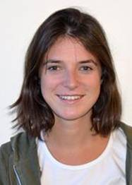
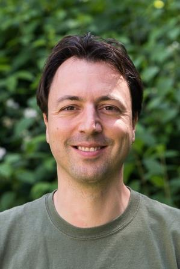

AI4Science Colloquium
Knowledge Shared = Knowledge2
The AI4Science Colloquium is a bi-weekly colloquium series, held on alternating Tuesdays at 14:00 Central European Time. In this colloquium our very own Teodora Pandeva and Fiona Lippert invite renowned speakers to present and discuss their state-of-the-art AI solutions for scientific discovery. Interested? Subscribe to our Email-list to be notified.
Email List
To stay up to date with our activities and be invited to our biweekly AI4Science colloquium series, you may send a request to be included in our emaillist via an email to us with your name, affiliation and a one-sentence motivation for joining.
Next Colloquium
Title: To be announced
Date: 24-11-2020 14:00-15:00 Central European Summer Time

Speaker: Luisa Lucie-Smith, PhD Student, Department of Physics and Astronomy, University college London
Abstract:
To be announced.
Schedule
- 24 November 2020 - Luisa Lucie-Smith
Previous Colloquia
Title: Boltzmann-generating Flows
Date: 10-11-2020 14:00-15:00 Central European Summer Time

Speaker: Frank Noé, Professor, Freie Universität Berlin
Abstract:
Frank Noé will talk about the sampling problem of many-body physics systems and introduce some statistics and machine-learning methods to tackle it. In particular, he will make an introduction to Boltzmann-generating flows, a combination of normalizing flows and statistical-mechanics-based reweighting, and stochastic normalizing flows. Some open questions and unsolved machine-learning problems related to Boltzmann-generating flows will be presented.
For an overview of more previous colloquia, please have a look at out blog.